31 Oct 2026. Harness copy on 127.0.0.1:8819, edition mode (TraverseRoofing-like) unless the caption says Sixfold. Made-up people only.
TR-48: the Sample property
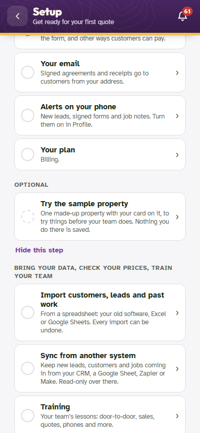
Setup checklist (phone): "Try the sample property" under Optional, below the counted steps, with "Hide this step". The count above stays "N of 10 done".
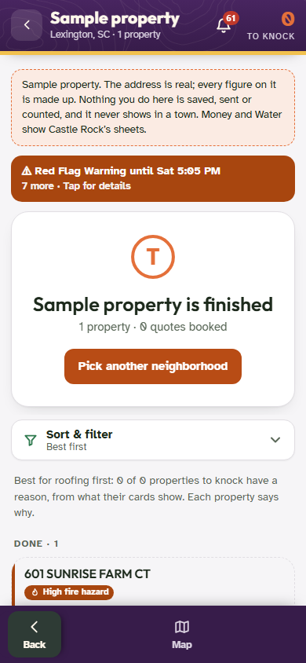
Tapping it opens the existing sample property; Back returns to the Setup checklist.
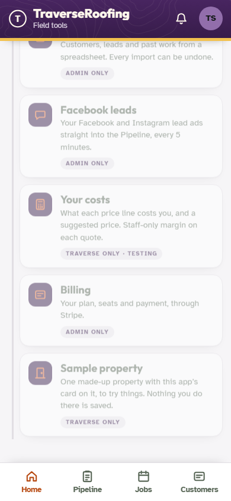
Traverse's own sign-in (super admin) keeps the tile under Office › Setup, tagged "Traverse only", and in the computer's tool row. Client admins no longer see either.
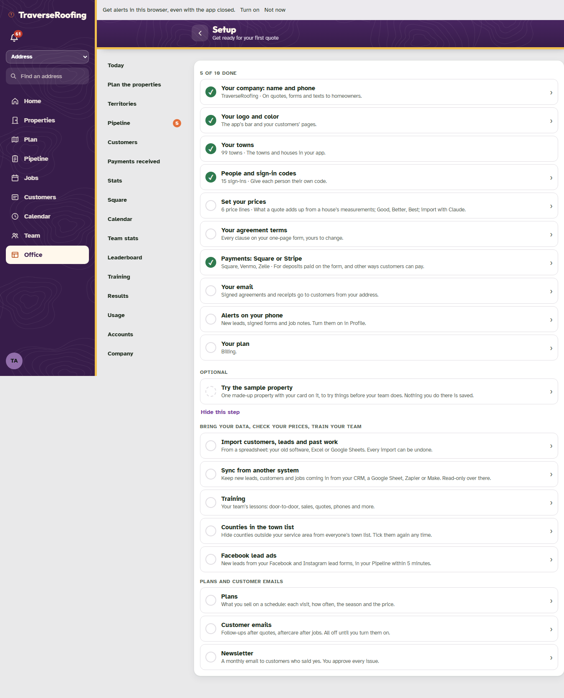
The same on a computer.
TR-48: Payments received and the badge
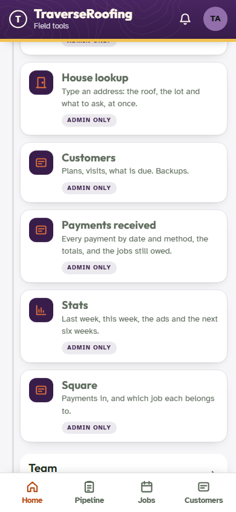
Office › Sales has a "Payments received" tile (editions and client installs).
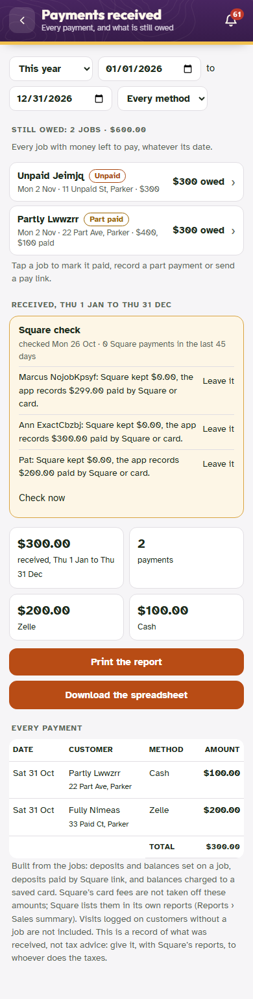
The screen: dates and method, then the jobs still owed (any date) with their badges, then what came in for the period with totals, print and spreadsheet.
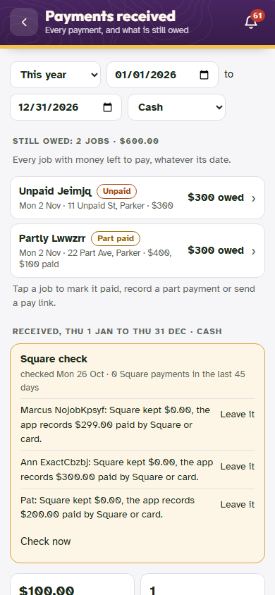
Method set to Cash: the list, the totals, the printout and the spreadsheet all follow it.
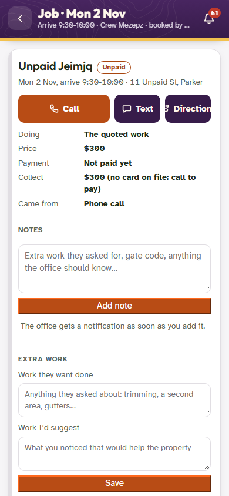
A still-owed job opens its job card: the badge by the name, and Mark it paid where it always was. Back goes to Payments received.
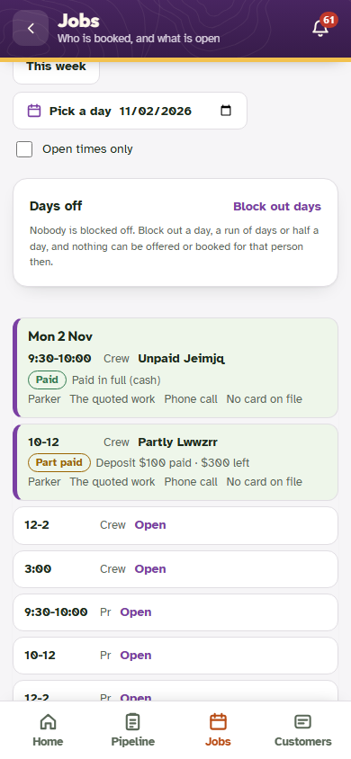
Jobs board: Paid / Part paid / Unpaid on each booked job.
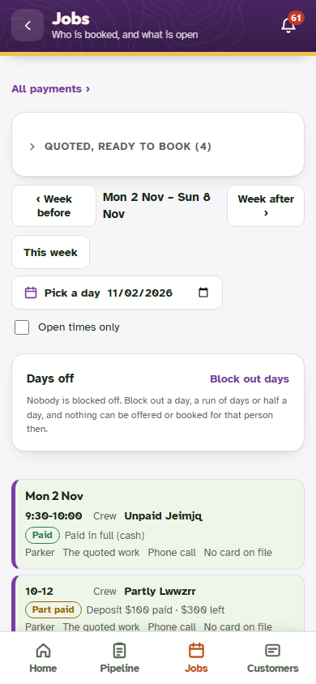
"All payments ›" on Jobs (and on Customers, where the big "Payments received (for taxes)" button was).
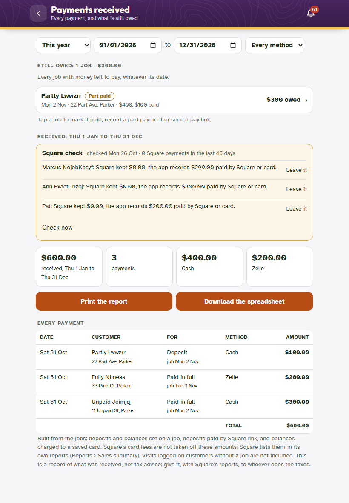
Tablet.
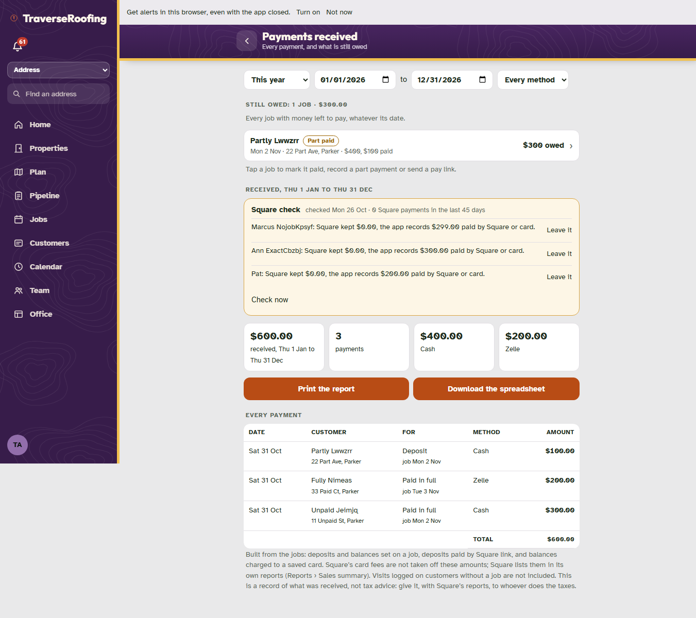
Computer: Office › Payments received in the Office menu.
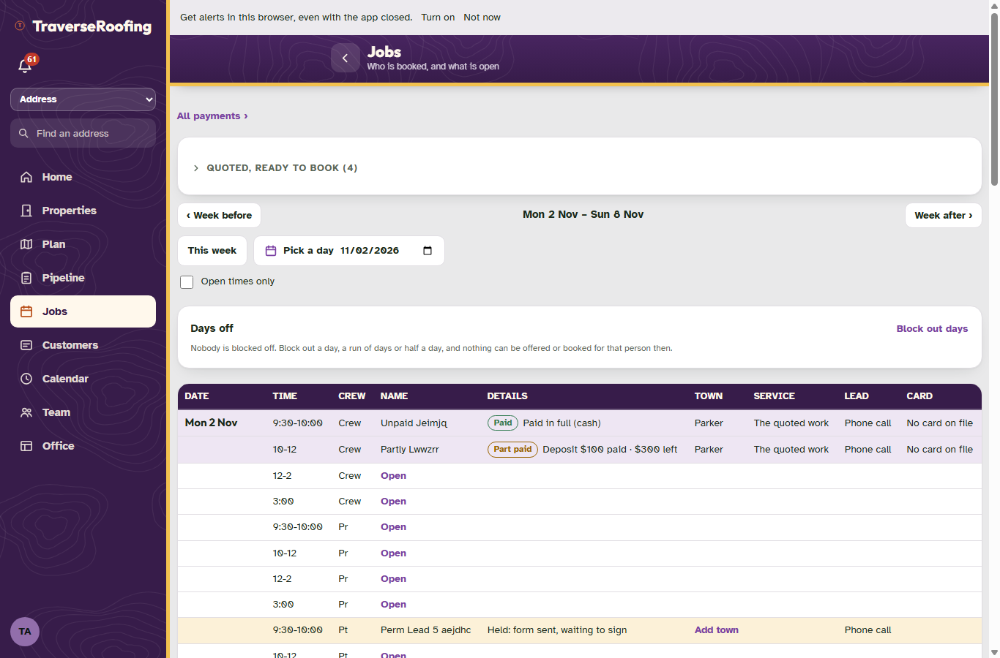
Computer: the Jobs board with badges.
TR-46: Jobber in Sync from another system
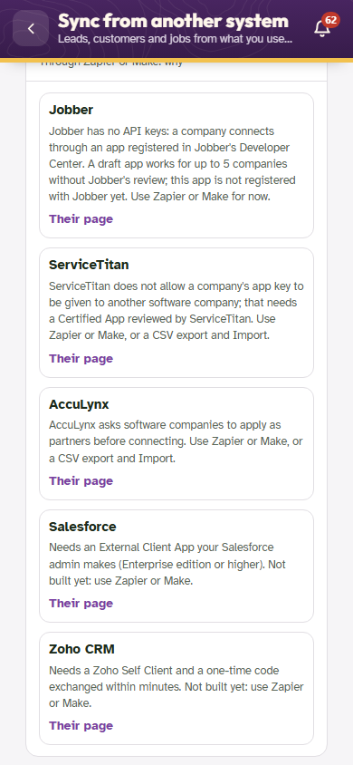
Without traverse-shared/jobber-app.json (today): exactly as before, Jobber in "Jobber, ServiceTitan, AccuLynx, Salesforce, Zoho" with why.
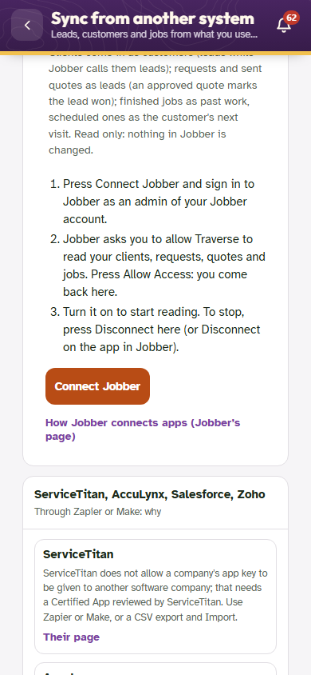
With the file: Jobber under Connect your CRM, with Connect Jobber and the three steps.
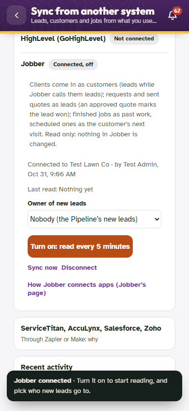
After the round trip through Jobber's sign-in (here a local stand-in): "Connected to Test Lawn Co", off until turned on.
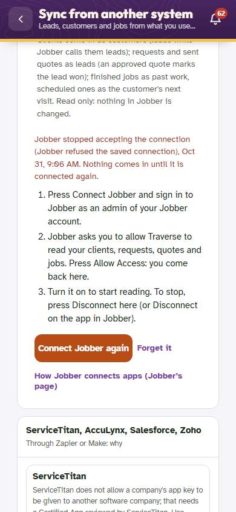
When Jobber refuses the saved connection: "Needs connecting again" and Connect Jobber again.
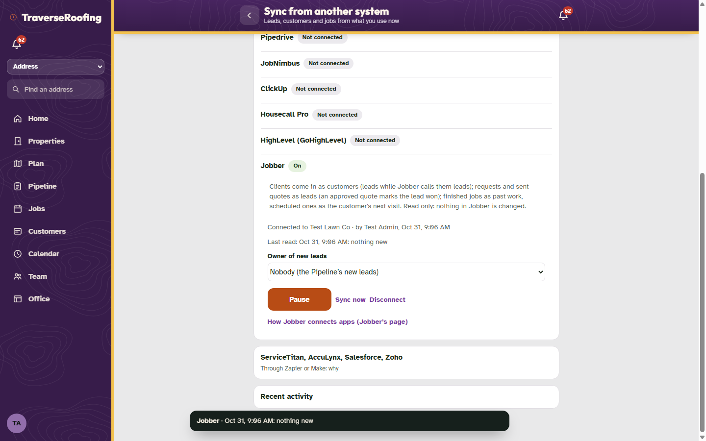
Computer: on, after Sync now.
Tests
tr48-test (Part 1, edition and Sixfold checks, API and pages): 45 passed, 0 failed, on a fresh data copy.
jobber-test (Part 2, against a local Jobber stand-in): 55 passed, 0 failed, on a fresh data copy.
Regression set (t1030, perms, roles, accounts, payments, jobs, reps, batch1029-ui, crmsync), once in edition mode and once in Sixfold mode, each on fresh data, before and after: no new failures. Every failure after is also there before (the plan-picker line in t1030, the four perms lines, two roles lines and the accounts / jobs page timeouts), or is a timing failure that passed on a re-run (batch1029-ui 43/0, crmsync 82/0 on a quiet port). One expected change: t1030 now also visits the new optional Setup row and checks its Back says Setup (it does).